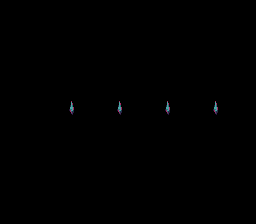

|
OpenSNES
Modern Open-Source SNES Development SDK
|
|
OpenSNES
Modern Open-Source SNES Development SDK
|

How to use the dynamic sprite system to stream sprite tile data into VRAM every frame. Unlike static sprites (where all frames live in VRAM permanently), dynamic sprites upload only the current animation frame, saving VRAM space when sprites have many frames.
This demo displays four data shards, 16x16 sprites, each turning through 24 frames of animation. SELECT switches to the next step of the same engine: metasprites — Kit, built from several OBJ at 16x16, 32x48 and 64x64 — streamed the same way under the three OBJSEL size pairs.
Read sprites/simple_sprite first (OAM basics), then sprites/animated_sprite (frame-based animation).
| Button | Action |
|---|---|
| SELECT | Switch between the four animated sprites and the metasprite scene |
| D-PAD Up/Down | (metasprite scene) switch the OBJSEL size pair: 8/16, 8/32, 16/32 |
At boot the four sprites animate by themselves.
Then open dynamic_sprite.sfc in luna (luna-gui dynamic_sprite.sfc) or any emulator.
This configures the engine:
Each dynamic sprite has:
The draw call runs every frame in the main loop. Only sprites with oamrefresh = 1 actually trigger a DMA transfer. The NMI handler finalises the frame automatically — it hides leftover sprites, resets the slot allocator, and DMAs the queued tiles to VRAM — so user code never needs to issue a manual flush.
Every 8 frames, the animation advances. Setting oamrefresh = 1 tells the engine to upload the new frame's tiles to VRAM on the next VBlank.
A metasprite is a list of pieces, each an offset, a tile and attributes:
oamMetaDrawDyn(id, x, y, meta, gfx, size_class) streams each piece's tiles with the dynamic engine; OBJ_SMALL / OBJ_LARGE say which half of the OBJSEL pair the pieces use. Changing the pair (UP/DOWN) re-runs oamDynamicInit() with a new sizeMode under force blank, and oamDynamicDrainQueue() uploads both heroes before the screen comes back on. The menu is text on BG1 (Mode 0, font at VRAM $3000, map at $3800); the engine's tiles stay at $0000 (large) and $1000 (small). The scene was the dynamic_metasprite example, a port of PVSnesLib's DynamicEngineMetaSprite.
The SNES can only write to VRAM during VBlank. With DMA, you get roughly 4-5 KB per frame. Each 16x16 sprite frame is 128 bytes (4 tiles x 32 bytes). With 4 sprites updating simultaneously, that is 512 bytes – well within budget.
Dynamic sprites are the right choice when sprites have many animation frames (RPG characters with walk cycles, attack animations, etc.) or when multiple unique characters share limited VRAM space.
This demo uses setScreenOff() (which sets REG_INIDISP = 0x80) during setup to allow unlimited VRAM writes. During gameplay, writes happen via DMA in VBlank only.
| File | Purpose |
|---|---|
| main.c | Dynamic sprite initialization, animation loop |
| res/*.png.toml | the import settings of the four sheets (opensnes-sprite, the three Kit sheets with metasprite); the build converts them and links the result, res/<name>.inc declares the symbols |
| res/sprite16_grid.png | the data shard turning, 24 16x16 frames, 8 a row |
| res/spritehero8.png, spritehero16.png, spritehero32.png | Kit at 16x16, 32x48 and 64x64, one frame each, on one palette (the metasprite scene loads one) |
The shard and Kit are the Néo-Lumen art (PixelLab, CC0), turned and indexed by devtools/art_assets/build.py (assets/neo-lumen/README.md). | Makefile | LIB_MODULES := console sprite sprite_dynamic sprite_lut dma background input |
console, sprite, sprite_dynamic, sprite_dynamic_meta, sprite_lut, dma, background, text, input (LIB_MODULES in the Makefile).